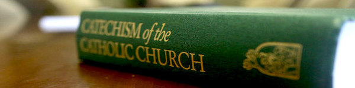

1754: The circumstances, including the right consequences, are secondary elements of a moral act. They contribute to increasing or diminishing the moral goodness or evil of human acts (for example, the amount of a theft). They can also diminish or increase the agent's responsibility (such as acting out of a fear of death). Circumstances of themselves cannot change the moral quality of acts themselves; they can make neither good nor an action in itself evil.
Our circumstances can change the way that one would act, and can redefine what would be considered moral. It changes one’s free will, either giving them more, or reducing it. Making one’s actions not just of their choosing but also a result of their situation, and the moral act in one situation can be immoral in another
1811: It is not easy for man, wounded by sin, to maintain moral balance. Christ's gift of salvation offers us the grace necessary to persevere in the pursuit of the virtues. Everyone should always ask for this grace of light and strength, frequent the sacraments, cooperate with the Holy Spirit, and follow his calls to love what is good and shun evil.
A person who turned away from the way of God, struggles to maintain their moral balance, but with the gift of Christ, is given what is necessary to maintain that balance and persevere and pursue it when it’s difficult.
1905: In keeping with the social nature of man, the good of each individual is necessarily related to the common good, which in turn can be defined only in reference to the human person:
Human nature is social, we strive for the common good of us all and we do it together. As humans we strive to be social, and what we consider good is directly related to our common good of society.